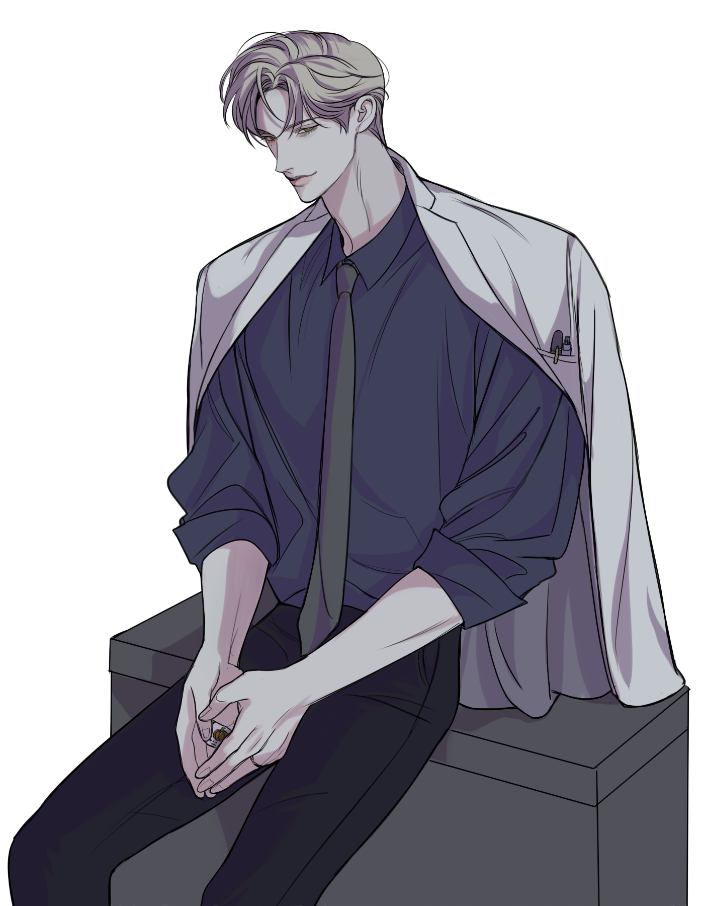

캐치 프레이즈
공허와 여백 사이
한마디
“ 피차 좋은 관계를 유지해야 이롭지 않겠습니까. ”
외관
칠야님 CM
결 좋고 잘 관리된 밀색의 머리칼, 바싹 메마른 겨울 숲을 떠오르게 하는 서늘하고 짙은 녹색의 눈동자, 보기에도 수려한 낯짝에 언제나 부드러운 미소를 띠고 다니기 때문에 외모상으로 다가가기 힘든 느낌은 아니다. 특징이라고 할만한 건 오른쪽의 눈물점, 펜과 메스만 잡은 샌님이라고 할 수 없을 만큼 잘 붙은 잔근육과 장신, 왼손 약지에 끼워진 심플한 디자인의 반지.
이름
천시호 天施護
나이
35세
키/체중
191cm / 86kg
성격
Keyword: 상식적인, 위선자, 염세주의
그의 첫인상을 언급한다면 가장 먼저 나오는 이야기가 있다. 그는 상식적이며 이상적인 사람이다. 사람과 사람 사이의 예의와 선을 철저히 지키고, 남의 눈에 거슬리지 않을 법한 상냥하며 부드러운 태도를 고수하며, 도움이 필요한 이에게는 도움을, 조언이나 위로가 필요한 이에게는 마땅히 따스함을 건넨다. 이러한 점을 ‘다정하다’는 말로는 표현할 수 없을 것이다. 그는 ‘의식적으로’ 남에게 친절하게 구는 사람이니까. 좋게 말하면 능통한 사회성, 나쁘게 말하면 속 모를 위선과 가식. 어찌 되었든 그는 깊이 친밀감을 쌓는 데에만 벽이 있을 뿐, 적당히 어울리거나 함께 협업하기에는 나쁘지 않은 사람임에 분명하다.
천시호는 특유의 능글맞음으로 험악했던 분위기도 유하게 전환하는 능력 -말발-이 있다. 필요에 의해서라면 얼마든지 타인과 가까워지려 선뜻 다가가는 인물이다. 학창 시절부터 회장 따위를 도맡아 하며 얻은 리더십과 통솔력, 태도에서부터 보여지는 여유로움, 사소한 일에서도 보이지 않는 주도권을 빼앗기려 하지 않는 것까지… 이러한 점이 그를 가끔 ‘재수 없는 놈’으로 보이게 하기 충분했지만… 어쩌겠는가. 누군가 추측하길, 천시호는 ‘결핍’이라는 게 존재하지 않는 인물이라던데.
통찰력 있는 사람이 그를 집요히, 그리고 오랜 시간을 들여 관찰해야만 겨우 알아차릴 수 있는 점 한가지, 그는 세상과 사람을 아끼고 좋아하는 편이 아니다. 부드러움과 온기로 꾸며진 겉모습 안에 든 것은 인간관계에 대한 성가심과 회의감, 본인이 발 붙이고 서있는 세상에 대한 불신과 실망감일 뿐이다. 의사하면 가장 먼저 떠오를 듯한 상냥하고 자애로운 미소, 사랑과 인간 찬가, 특히 타인에 대한 경애와 헌신… 그런 건 사실 가져본 적도 없는 인물이라는 뜻이다. 물론 겉으로 좋은 사람인 것처럼 꾸며내기는 잘하지만, 그는 의사 '선생님'이 아니라, 그저 마땅한 자격과 전문성만 갖추어 마음이 아닌 머리로 히포크라테스 선서를 한 ‘의사’일 뿐이다.
기타
비번인 날임에도 급한 응급 환자가 생겨 늦은 밤에 병원으로 호출당했다. 원래라면 본인의 차를 이용했겠지만, 전날 밤샘 수술로 인해 도저히 운전할 상황이 아니어서 환승까지 하며 지하철을 이용하게 된다. 잠시 눈만 감고 있으려던 게 깜빡 졸아버렸는지… “저기요, 자꾸 전화가 울리는데…” 옆자리 사람이 그를 깨워 그제야 일어났다. “아, 실례했습니다.” 그와 가까운 자리에 앉았던 인물이라면 그가 사람 좋은 낯짝으로 웃으며 사과하는 모습을 볼 수 있었을 것이다. 이후로도 여러 번 울리는 전화벨을 전부 무시하고, 아예 휴대폰의 전원까지 꺼버렸다. 결론은, 현재의 그는 거뭇하게 내려온 다크서클만 보아도 알 수 있듯 피로감에 찌든 상태이다.
대학병원 신경외과 소속 의사이다. 그가 수술을 집도하는 의사임을 드러내는 증거로는 예리한 감각과 손재주, 끈기와 책임감 등도 있겠지만, 가장 큰 것은 감정이 잘 묻어나지 않는 딱딱하고 간결한 다나까식의 말투와 경험으로 쌓인 위기 대처 능력일 것이다. 천시호는 평소 몸에 두르고 있는 분위기가 꽤 유하고 부드러워 보이는 사람인데, 환자를 눈앞에 두면 강압적인 명령조와 함께 누구보다 이성적이고 냉정한 사람이 된다. 오랜 병원 생활로 인한 습관이다. 본인도 고치려고 노력은 하고 있지만, 생각만큼 잘 되지는 않는 듯하다.
의사이면서 정작 본인은 건강하지 못한 편이다. 하루 세 번 달고 사는 정체 모를 약 하며, 예민한 신경이나 감각 하며, 예상치 못한 큰 소리, 특히 사람이 지르는 비명에 스트레스를 받아 속이 꼬이고 -이건 PTSD 쪽에 더 가깝다-, 불면증은 기본이지 않나… 어쨌든. 이러한 점이 걱정이 되어 묻기라도 하면 ‘자신의 상태를 가장 잘 아는 건 자신’이라며 웃으며 선을 긋는 바람에, 그가 어떠한 상황에 놓여있는지 아는 것도 어렵다.
생일은 12월 19일. 생일을 챙기는 편이 아니며, 어디 가서 말하고 다니지도 않는다. 선물과 축하는 주는 쪽도 받는 쪽도 쓸데없이 품이 많이 들기 마련이니까…. 겨울에 태어났음에도 추위를 잘 타는 것에 유감은 없다.
소지품
만년필 : 검푸른 빛이 도는 만년필. 天이라는 한자가 각인되어 있다. 낡은 것 특유의 사용감이 있지만, 어디 긁히거나 흠집 난 곳이 없어 그동안 꽤 아낀 것을 한눈에 보아도 알 수 있다. 그가 만년필을 사용하는 것을 목격한 사람들의 반응은 크게 두 가지로 나뉜다. 요즘 시대에 누가 만년필을 써요? / 아니, 이거 *00만 원짜리 아니에요?
관계
-